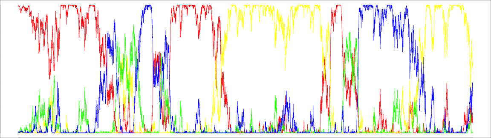

Adaptive Evolution
By comparing sequences from distinct individuals it is possible to discover the mutations that occured in their ancestry. How many of these mutations contributed to adaptation, however, is the topic of a long-running debate. Our research aims at understanding which factors determine the occurrence of adaptive mutations along the genome.
Estimating the rate of adaptation at the molecular level
It is possible togain insight about the rate of adaptive mutations by contrasting the mutation rate at distinct categories of sites (see [1] for review and references therein for a description of the methods): at neutral sites, the fate of mutations is independent of their type, and the substitution rate (that is, the rate at which mutations get fixed in the population) is equal to the mutation rate (the rate at which mutations appear in the population). At non-neutral sites, however, mutations that confer an advantage to the organism have a higher chance to become fixed in the population, leading to a higher substitution rate than the one at neutral sites. Conversely, so called-deleterious mutations (mutations with a negative effect for the individuals that carry them) have a lower chance to become fixed, leading to a reduce substitution rate. Contrasting the rate of substitutions at neutral and non-neutral sites, therefore, allows the estimation of the strength and direction of selection, accounting for the underlying mutation rate.
In proteins, some mutations do not change the encoding amino-acid, owing to the degeneracy of the genetic code. Such mutations are termed synonymous, as opposed to non-synonymouns mutations that change the underlying amino-acid. As an approximation, one can consider that synonymous mutations are neutral, while non-synonumous ones are not. A measure of selection in proteins is then given by the ratio of non-synonymous over synonymous substitutions, dN/dS, also termed ω. The ω ratio, however, only represents an average of the selective forces acting on a protein. Given the prevalence of purifying selection in protein evolution it will be generally negative, making it difficult to detect positive selection when it happens.
One way to estimate the part of the rate of substitutions that is adaptive is to combine sequences from distinct individuals from the same population with sequences from another species. The non-synonymous substitutions between species can be seen as the sum of two substitution types: adaptive non-synonymous substitutions dNa and non-adaptive non-synonymous substitutions dNna. The ω ratio can then be decomposed as \[\begin{eqnarray} \omega &=& \frac{dN_a + dN_{na}}{dS}\\ &=& \frac{dN_a}{dS} + \frac{dN_{na}}{dS}\\ &=& \omega_a + \omega_{na} \end{eqnarray}\]
Positively selected mutations will be fixed rapidly and will rarely be seen when comparing sequences within populations. Deleterious mutations will be removed from the population, effectively reducing genetic diversity in the population. As a result, polymorphism will be essentially determined by neutral and deleterious mutations, so that the ratio of non-synonymous polymorphism, pN, over synonymous polymorphism, pS, provides an estimation of ωna. It results that \(\omega = \omega_a + pN/pS\). An estimation of the proportion of adaptive non-synonymous sustitutions, α, is then given by \[\begin{eqnarray} \alpha &=& {\omega_a \over \omega}\\ &=& {\omega - pN/pS \over \omega}\\ &=& 1 - {pN/pS \over dN/dS}\\ &=& 1 - {pN.dS \over pS.dN} \end{eqnarray}\] This simple estimation, however, ignores the occurrence of mutations with mild effects, negative of positive, that segregates as polymorphism. The rate of adaptive mutations is then underestimated. This caveat can be addressed by using models of distribution of fitness effects (DFE). Model-based inferrence of adaptive substitution rate is a poweful method, which requires genome-sized datasets. By fitting and comparing models on distinct gene sets, it is possible to correlate the rate of molecular adaptation with genomic factors such as recombination rates, gene function, expression level, etc.The impact of protein structure on the rate of adaptive evolution
The comparison of homologous sequences in protein-coding genes revealed that the substitution rate varies extensively between amino-acid positions. In particular, protein structure has a strong impact on the distribution of substitution rates, residues exposed at the surface of protein usually evolving faster than residues at the protein core. This difference in rates, however, may be explained by two non-exclusive hypotheses:
- Weaker biophysical constraints at the surface could lead to mutations with smaller negative fitness effects on average. The larger substitution rate would then result from less mutations being removed by purifying selection.
- Mutations at the surface could be more frequently beneficial, or have a large positive effect on average. The larger substitution rate would then result from more mutations being fixed by positive selection.
In a study led by Dr Filipa Moutinho as part of her PhD work, we use population genomic datasets of Drosophila melanogaster and Arabiopsis thaliana, and showed that, in fact, both hypotheses are true
.
We observed significant correlations between the relative solvent accessibility (RSA) and the rate of adaptive (\(\omega_a\)) and non-adaptive (\(\omega_{na}\)) non synonymous substitutions (Figure 1).

We also showed that several other factors correlate with the rate of adaptive evolution, such as the length of the protein or the presence of intrinsically disordered regions, but that RSA was the main structural factor. To disentangle multiple possibly confounding effect, we used a statistical procedure termed "stratification". It consists in dividing the dataset according to one explanatory variable, and assess whether the correlation between the second explanatory variable and the response variable still holds in each subset. For instance, when splitting the data according to protein length and solvent exposure, we still saw a strong effect of RSA while the effect of gene length vanished, suggesting that the effect of gene length was due to its correlation with RSA (small proteins having a higher surface/volume ratio). Conversely, when splitting according to RSA and intrinsic disordered, both effects persisted, although the effect of disorder was weaker once RSA was accounted for.
This work provided the first large-scale evidence that adaptive mutations tend to occur more often at the surface of proteins, at least in these two model species. We the seaked to investigate the underlying reason, and hypothesized that adaptation occurs at the surface of proteins because it is where active sites are located. However, we did not find evidence for a higher rate of adaptive evolution in annotated active sites. We then questioned whether protein-protein interactions could explain the observed pattern, as protein get in contact via their surface. Yet, we did not find any correlation between the number of known interactions and the rate of adaptive evolution. Classifying genes according to their functional categories, we noted several categories had a high rate of adaptive substitution in both species. These categories, however, were rather unexpected... They include genes related to gene expression (synthesis and degradation of mRNA and proteins), as well as DNA maintainance and repair. Such categories are usually considered as "house-keeping", and the underlying genes are expected to be rather conserved and evolving under purifying selection. An exciting perspective is that such genes are also the target of intra-cellular parasites, such as viruses and fungal pathogens. The high rate of adaptive evolution in these genes, and at the surface of proteins in general, therefore, could be the result of arms-races with these pathogens. Interestingly, this hypothesis is consistent with the conclusions obtained from datasets of Mammalian species (see work by Enard and colleagues, https://doi.org/10.7554/eLife.12469).
The evolution of the rate of adaptive evolution
Under construction
References
- Moutinho AF, Bataillon T, Dutheil JY. Variation of the adaptive substitution rate between species and within genomes. Evolutionary Ecology ;34:315–338 https://doi.org/10.1007/s10682-019-10026-z
- Moutinho AF, Trancoso FF, Dutheil JY. The Impact of Protein Architecture on Adaptive Evolution. Molecular Biology and Evolution ;36(9):2013-2028 https://doi.org/10.1093/molbev/msz134
- Moutinho AF, Eyre-Walker A, Dutheil JY. Strong evidence for the adaptive walk model of gene evolution in Drosophila and Arabidopsis. PLoS Biology : https://doi.org/10.1371/journal.pbio.3001775